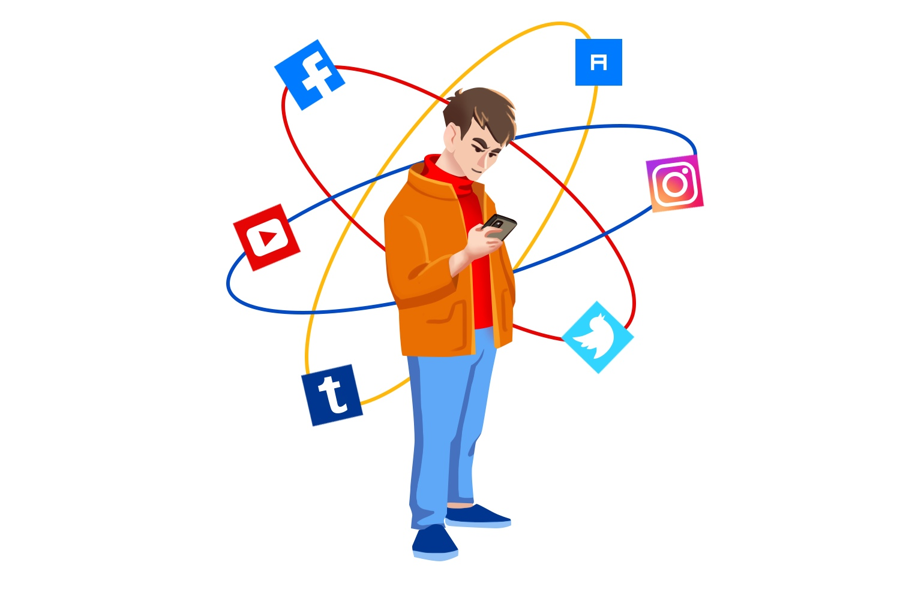
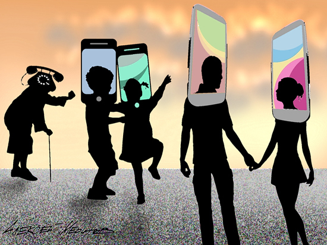

Социальные сети
– это интернет-площадки для общения, обмена информацией и контентом, прочих социальных взаимодействий. Они используются для работы, отдыха и развлечений, позволяют координировать между собой группы людей и имеют широкий набор функций. В отличие от более компактного формата мессенджера социальная сеть обычно поддерживает возможность выкладывать во всеобщий доступ и потреблять контент. Она в целом более публична. Соцсетями пользуются миллионы людей по всему миру, что делает их прекрасным инструментом интернет-маркетинга.
Положительные стороны социальных сетей:
1. Скорость поиска. В социальных сетях можно без проблем найти нужное видео, музыку, человека, а также просто отыскать единомышленников. Регистрируясь в социальной сети, пользователь сообщает свои имя и фамилию, а также другие данные – возраст, учебные заведения, контактные телефоны. Это позволяет в считанные секунды найти любого человека, при условии, что он указал достоверные сведения о себе. Это очень весомый плюс – ведь раньше для того, чтобы найти друзей детства или одноклассников требовалось гораздо больше времени.2. Простота общения и обмена информацией. Конечно же, у каждого из нас есть мобильный телефон, и мы можем обмениваться информацией посредством смс и ммс сообщений. Но ведь на это уходит немалое количество денег. Гораздо удобнее пересылать данные в соц. сетях. Имея аккаунт в социальной сети, человек находится в курсе всего, что происходит с его друзьями, он может зайти на страничку любого интересующего его человека, посмотреть фотографии, прокомментировать новости или просто пообщаться. Это очевидное достоинство соц. сетей – сегодня общаться стало гораздо проще и удобнее.
3. Создание круга интересов. Чем бы ни увлекался человек, можно не сомневаться, что в социальной сети он обязательно найдет своих единомышленников. Для этого существуют интересные сообщества и группы, в которых можно совершать определенные покупки, обменять что-либо и даже найти работу.
Отрицательные стороны социальных сетей:
1. Расход большого количества времени. Для кого-то соц. сети – это отличный шанс «убить» время, а для кого-то – это просто потраченные впустую часы. Ведь это время можно провести с гораздо большей пользой: встретиться с друзьями, приготовить вкусный ужин или же заняться самообразованием.2. Отрешение от реального мира. В социальных сетях мы позиционируем себя несколько иначе, нежели в жизни. Опираясь на современные исследования в области Интернет - общения, можно сказать, что 70% активных посетителей социальных сетей приукрашивают свою жизнь. Кроме того, возможность изменить реальность и предстать в социальной сети богатым и успешным также многих прельщает. В итоге есть риск настолько вжиться в созданный виртуальный образ, что, так сказать, вернуться вовремя на землю не всегда получается.
3. Деградация личности. Если обратить внимание на речь чрезмерно активных пользователей социальных сетей, то можно заметить бессмысленность большинства их разговоров и присутствие в них непонятных обычным людям слов, типа «лайкнуть», «юзать», «лол» и т.д.
4. Потеря навыков социального общения. Подмена реального общения ведет к потере чувства реальности и навыков социального общения. В живом разговоре нельзя поставить смайл. Понятия «добавить в друзья», «удалить из друзей», создают ощущение, что в реальной жизни так же просто строятся отношения, а это не так. Добавь на страницу свечу памяти по погибшим, добавь георгиевскую ленточку, гвоздику и т.д. в честь Дня Победы. Вместо реальной гвоздики ветеранам, вместо активной помощи благотворительным организациям и пострадавшим людям - человеку в сети кажется, что он, добавив картинку, сделал дело.
5. Вероятность возникновения зависимости. Соц. сети обладают большим аддиктивным потенциалом, т.е. значительным риском возникновения зависимости. Особенно подвержены этому подростки, у которых отсутствие доступа в Интернет может вызвать настоящую психическую «ломку».
6. Социальные сети — поле деятельности для мошенников и недоброжелателей. Не многие задумываются, что размещение чрезмерного количества фотографий, наиболее подробных данных о себе, может обернуться против них.
7. Вред здоровью. Постоянное присутствие в соц. сети может нанести определенный вред здоровью. Многочасовое сидение за компьютером может привести к снижению зрения и гиподинамии.
8. Потеря мотивации к работе. Человек, попавший в зависимость от социальных сетей, становится менее активным. Сегодня на многих предприятиях вход сотрудников в соц. сети недоступен, так как подобное общение сильно отвлекает от работы.
